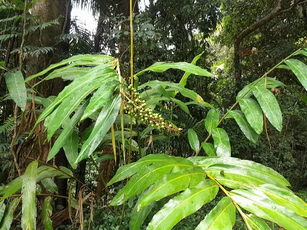

Native ginger
Native ginger is a wild fruit you can forage from January to May in Subtropical east coast and Tropical north. Ginger-like plant of rainforest gullies with blue berries; leaves and rhizome taste mildly of ginger.

When is native ginger in season in Australia?
Native ginger is usually in season January to May. Timing shifts with weather, latitude and altitude.
Where does native ginger grow in Australia?
Native ginger grows in New South Wales, Northern Territory, Queensland, Western Australia. Regions: Subtropical east coast, Tropical north.
How do you recognise native ginger?
Ginger-like plant of rainforest gullies with blue berries; leaves and rhizome taste mildly of ginger.
How do you harvest native ginger?
Pick only fully ripe fruit that comes away easily, into a shallow container so it doesn't crush. Leave plenty on the plant for birds and wildlife.
How do you eat native ginger?
Berries as a snack; leaves to wrap fish.
How do you store native ginger?
Best fresh.
What can you cook with native ginger?
- Barramundi in native ginger leaf: Fish wrapped in native ginger leaves with lemon myrtle and grilled.